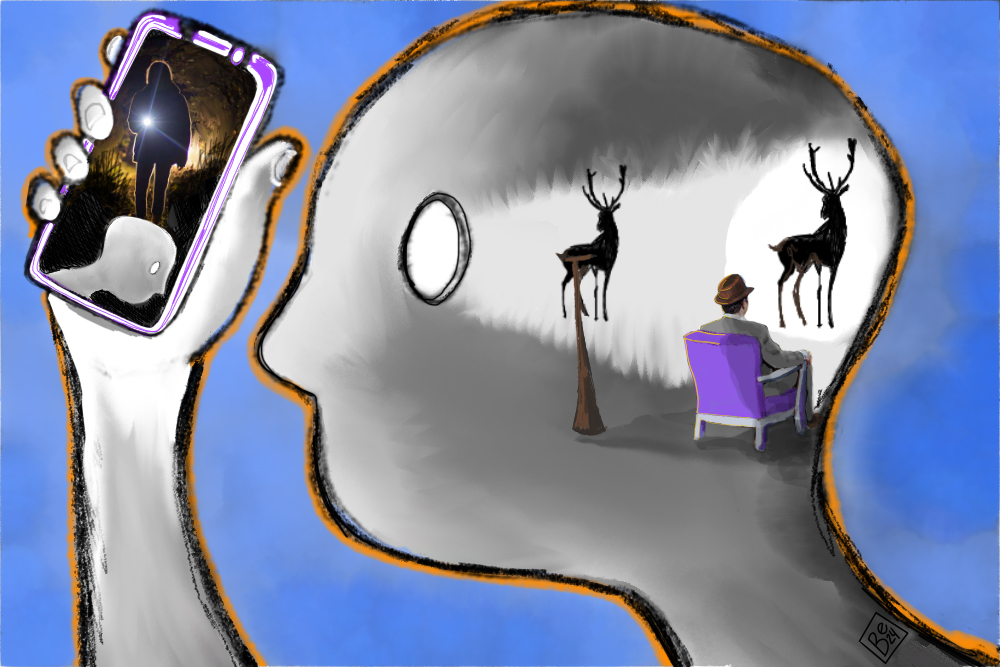
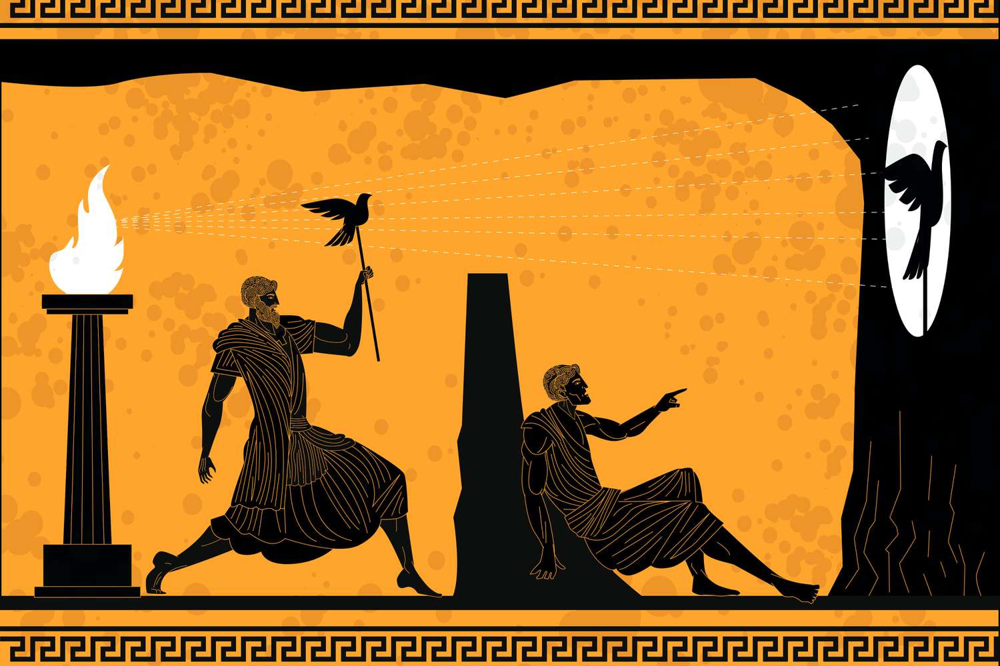
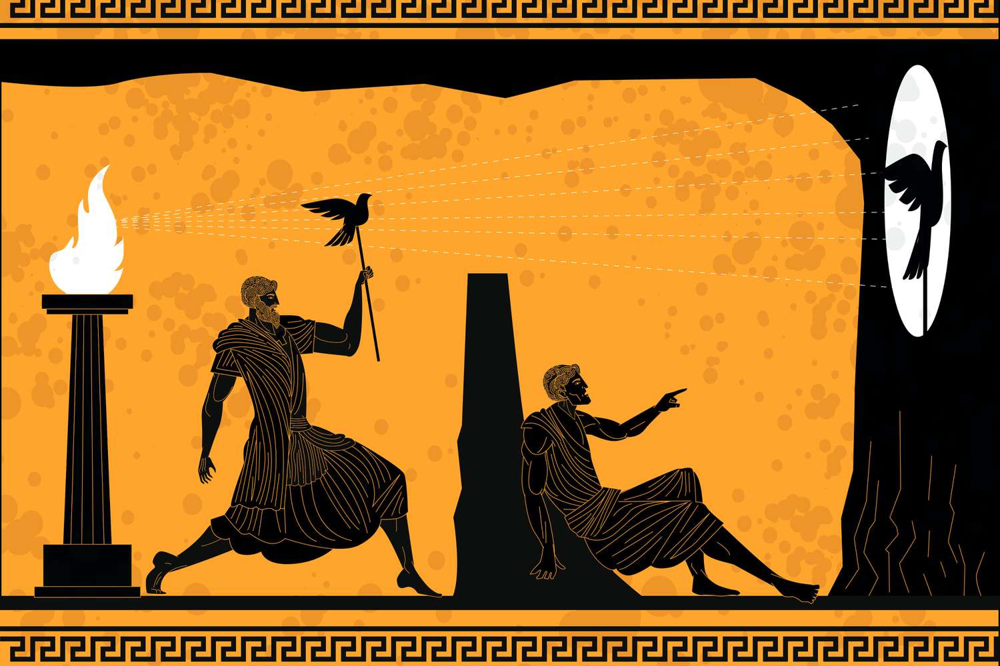
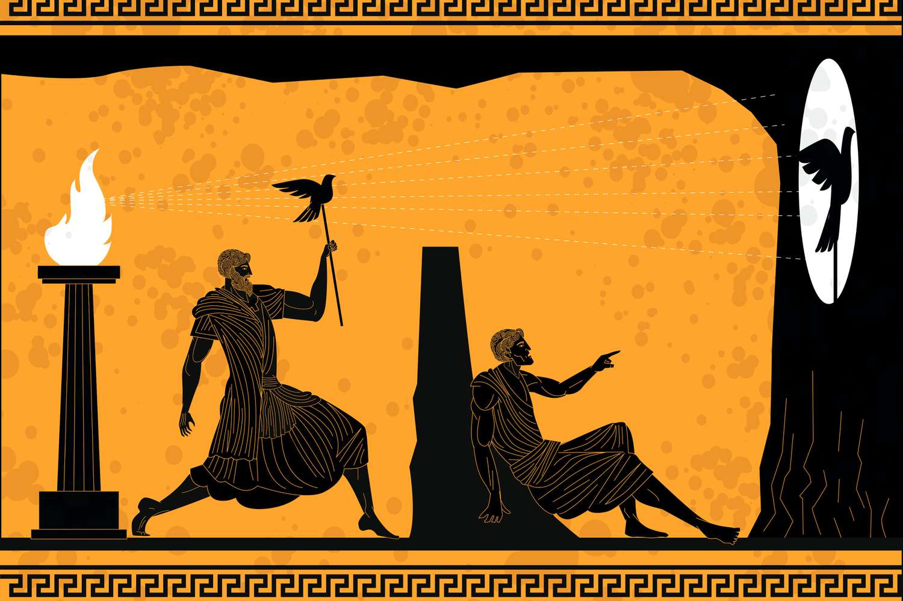

There were several concepts that I found greatly interesting. Such as Amor Fati, Plato's Cave Allegory, and Univeral Language.
Now if the button is pressed it will reveal which concept I found the most interesting.
I found the cave allegory most interesting because I had more and deeper conversations with peers about this concept that helped further help my understanding of the concept. It also opened my eyes that we truly only believe what we are shown. And we can either choose to stay believing the shadows or we can leave the cave of shadows and pursue truth and live to find out what truth really is.

 

